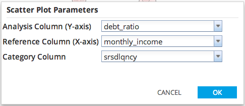
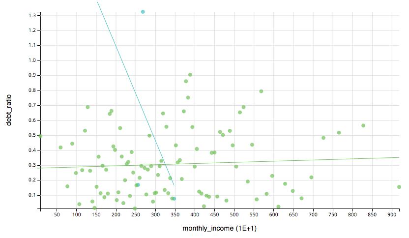

Scatter Plot Chart
- Use Scatter Plot Chart to create a scatter plot of the corresponding dataset.
- Database operators must output a table/view for Scatter Plot Chart to be enabled.
- Scatter Plot Chart is accessible from the Explore menu of the operator toolbar or by right-clicking an appropriate operator.
- Description of parameters:
- Reference Column corresponds to the X-axis.
- Analysis Column corresponds to the Y-axis.
- Category Column is a grouping of points denoted by color.

